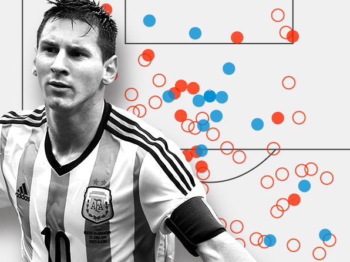
Ian Walton / Getty Images
In their Group F World Cup match late last month, Argentina and Iran were still deadlocked after 90 minutes. With the game in stoppage time and the score tied at 0-0, Lionel Messi took the ball near the right corner of the penalty area, held it for a moment, then broke left, found his seam, took his strike and curled it in from 29 yards. What was going to be a draw was now a win, and Messi had put Argentina into the Round of 16.
It was the sort of play that inspired the phrase "Messi magic." But for those who only watch soccer when the World Cup rolls around, this was probably only the second (or at most third) goal they'd seen from the little man they call La Pulga ("The Flea"). Despite having 407 career goals in club and international play (including a record 91 in 2012 alone) and a record four Ballon d'Or (World Player of the Year) awards, until this year's tournament, Messi hadn't scored in a World Cup match since 2006.
Since scoring an eerily familiar goal in the 2007 Copa Del Rey, Messi has constantly been compared to Argentine great and his former national team coach Diego Maradona. Despite his young age — he turned 27 on June 24 — Messi has taken substantial criticism in Argentina and elsewhere for failing to engineer a World Cup run like that of the man with the "Hand of God."
To Argentina devotees, it probably doesn't help that during Messi's tenure at FC Barcelona the club team has won two FIFA Club World Cups to go with six La Liga and three UEFA (All-European) championships.
Perhaps this year will be different. Messi is finally having the kind of World Cup expected of him. He has scored in every game so far (four goals overall), including one on a beautiful free kick against Nigeria and the aforementioned game-winner against Iran. As of this writing, FiveThirtyEight gives Messi and his compatriots a 16 percent chance of winning the tournament — second only to host nation Brazil.
Even though national teams are patchwork and only play together for a handful of games each year, how Messi plays with Argentina relates to what is ultimately a fair criticism of his success: Most of it has come for FC Barcelona, a free-spending virtual all-star squad, packed with many of the world's best players.1
As the primary striker for such a juggernaut, it can be hard to detangle Messi's goal-scoring prowess from Barcelona's general offensive dominance. And the 2013-14 season hasn't helped: Battling minor injuries and facing competition for touches from superstar arrival Neymar, Messi's most recent season was slightly below par by his standards, yet Barca finished second in La Liga. (And in the seven games Messi missed, they went 6-1.) He still scored 41 goals, but that total was less than the 60 he scored the year before, and fewer than the 51 that rival Cristiano Ronaldo of Real Madrid scored en route to capturing the Ballon d'Or.
I think this criticism is fair — and I found it intriguing enough to look into the matter myself. So I gathered and organized data, crunched it, re-crunched it, and gathered more data2 and crunched it some more.
By now I've studied nearly every aspect of Messi's game, down to a touch-by-touch level: his shooting and scoring production; where he shoots from; how often he sets up his own shots; what kind of kicks he uses to make those shots; his ability to take on defenders; how accurate his passes are; the kind of passes he makes; how often he creates scoring chances; how often those chances lead to goals; even how his defensive playmaking compares to other high-volume shooters.
And that's just the stuff that made it into this article. I arrived at a conclusion that I wasn't really expecting or prepared for: Lionel Messi is impossible.
It's not possible to shoot more efficiently from outside the penalty area than many players shoot inside it. It's not possible to lead the world in weak-kick goals and long-range goals. It's not possible to score on unassisted plays as well as the best players in the world score on assisted ones. It's not possible to lead the world's forwards both in taking on defenders and in dishing the ball to others. And it's certainly not possible to do most of these things by insanely wide margins.
But Messi does all of this and more.
Scoring
I think it's fair to say that goals mean more in soccer than points do in most sports. And Messi scores a lot of them. Since the end of the 2010 World Cup, Messi has been responsible for 291 goals and assists in the 201 of his games in club and national team play tracked by the sports analytics company Opta. How does that compare with other soccer stars across top leagues around the world? (The Opta data set includes 16,574 players and 24,904 games in both league and international play since the end of the 2010 World Cup.)
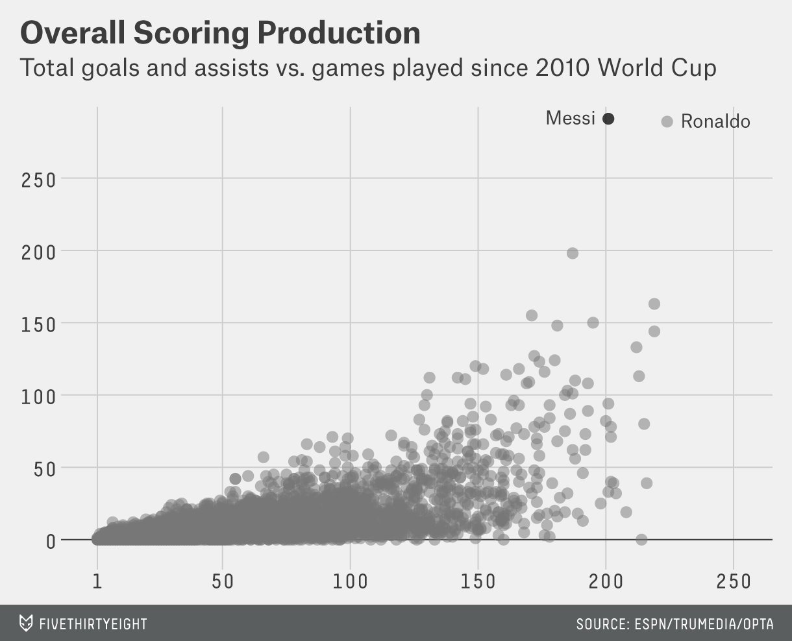
Coming in just behind Messi with 289 goals and assists since the 2010 World Cup is Cristiano Ronaldo, Messi's rival from Real Madrid. When it comes to scoring, these two aren't just on top of the pile, they're hang-gliding somewhere way above it. Messi and Ronaldo have been compared to each other so often by sports media and fans alike that it almost feels trite to compare them again, but it can't be helped. If we want to compare Messi to all players with a remotely similar volume of production, we're left with Ronaldo.
Now let's leave assists aside for a second (much more on them later), and concentrate on Messi's shooting. Like Ronaldo, he has an enormous number of goals, but also takes an enormous number of shots. If this were basketball, we might expect a negative (or at least decelerating) relationship between shot volume and shot efficiency — the more shots a player takes the less efficient he is.3 But it turns out this isn't really the case in soccer: More efficient shooters tend to take more shots. Despite this, Messi is still a trend-breaker:4
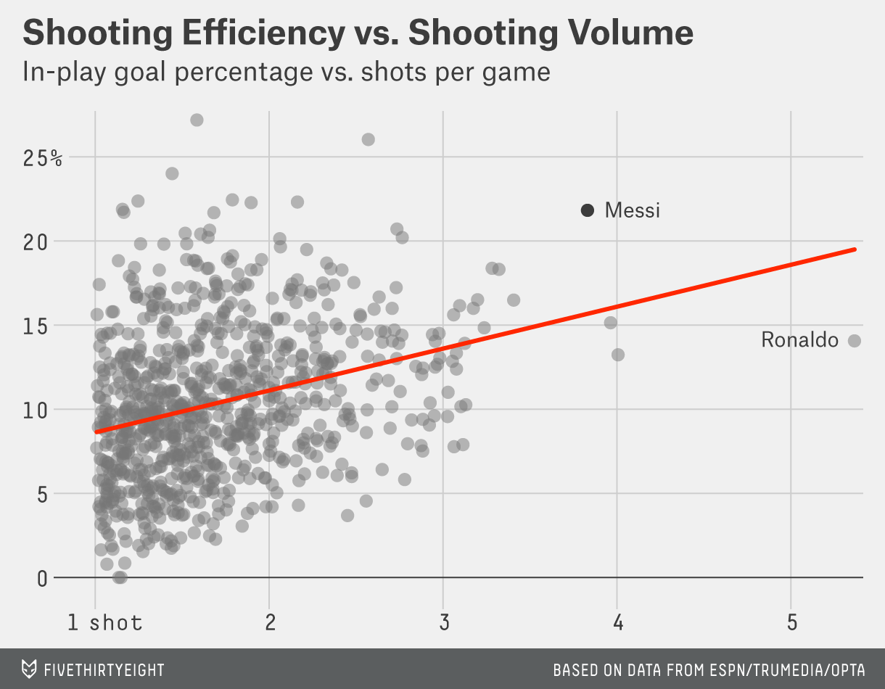
Of the 866 players who qualified for that plot — by playing in 50-plus games and averaging at least one shot attempt per game — Messi is the ninth-most efficient shooter overall (Ronaldo is 173rd), and he's by far the most efficient of anyone with a similar shot volume. The highest-volume shooter who is more efficient is Mario Gomez, the former Bayern Munich striker, who takes about two-thirds as many shots as Messi.
But in soccer, unlike in basketball, shooting efficiency isn't the single most important stat. Since the value of a possession in soccer is much lower, so is the cost of missing a shot (and missed shots often have good outcomes as well). That said, quality shot opportunities in soccer are still a limited resource, so making the most of them is important.
To generalize a bit, some of the value a shooter provides comes from taking more and better shots (e.g. taking them closer to the goal, at a better angle, amid fewer defenders, etc.), and some of it comes from putting in those shots more often. For example, Messi's typical regular (non-set piece) shot comes from 14.9 yards out, while Ronaldo's average shot comes from 20.1 yards out. ESPN/TruMedia has a model for estimating the chances of a player making each shot he takes based on type and location (this metric is known as expected goals). The difference between a player's actual goals and his expected goals is called "goals above average" (or GAA). Because Messi takes shots that are more likely to go in, his average attempt has an expectation of .182 goals, while the average Ronaldo shot has an expectation of .124 goals — so we would expect Messi's shooting to be more efficient based on that alone. However, Messi has also exceeded that expectation by a greater amount than Ronaldo has. Messi scored .220 goals per shot attempt for .038 GAA per goal. Ronaldo scored .139 goals per attempt, so he had .015 GAA per goal.
Here's a comparison of the top 20 shot-takers overall (regular shots in all games since the 2010 World Cup):
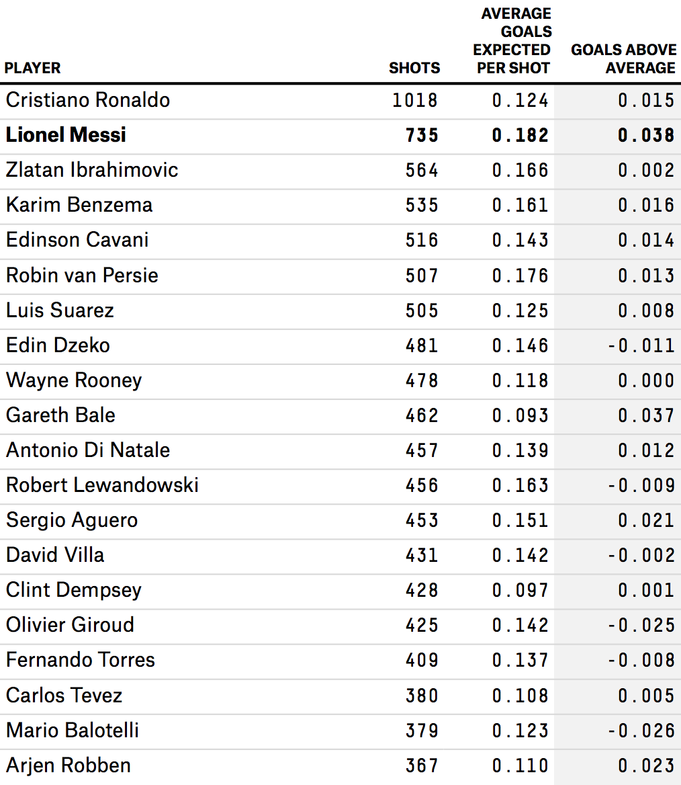
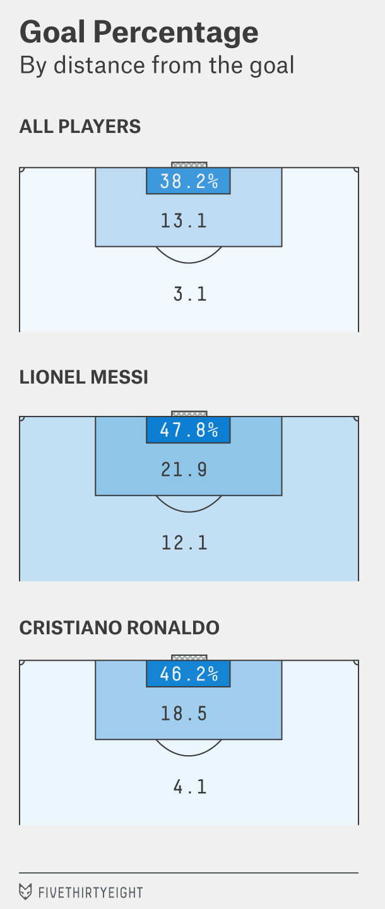
In this group, Messi both takes the best shots and does the most with those attempts.
If we break this down using shot-location data, it's clear that Messi is highly efficient across a wide range of distances.
The percentage of shots Messi makes from outside the penalty area is absolutely stunning. He scores almost as often per shot from outside the penalty area (12.1 percent) as most players do inside it (13.1 percent).
Of 8,335 players in our dataset who have taken at least one shot from outside the box, only 1,835 have scored from that distance at any point. There are 47 players with 50 or more attempts from outside the box without a single goal, and about 500 with at least 20 attempts and no goals. Messi leads the world with 21 goals from outside the penalty area, on just 173 shot attempts.
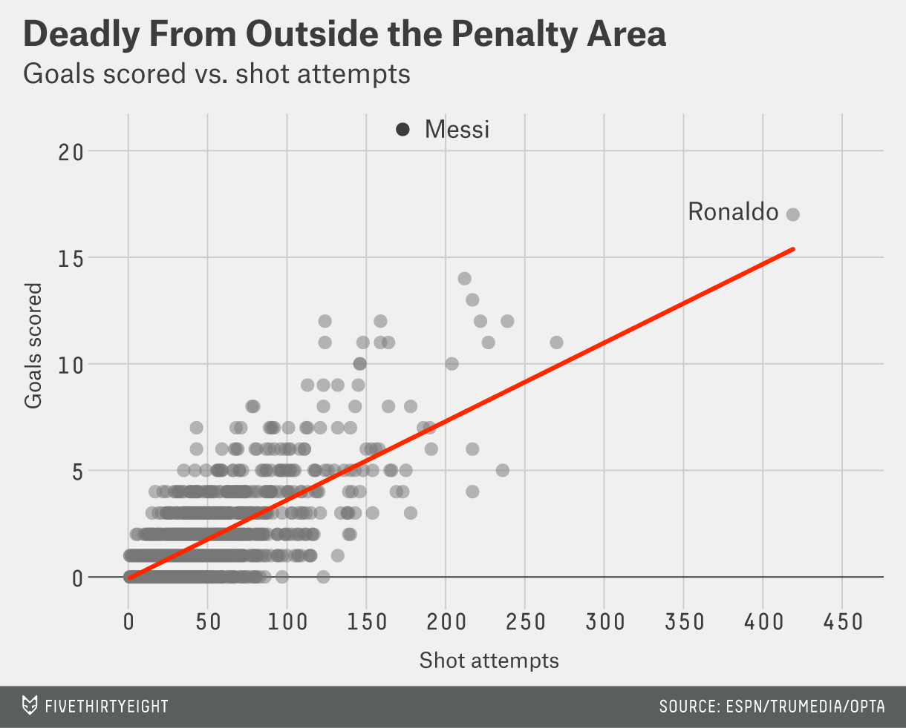
Ronaldo takes more than twice as many shots from this distance, but still has fewer goals overall. Messi, meanwhile, scores at a remarkable rate. Adjusting for shot quality with the GAA model, Messi is running 12.6 goals above expectation (based on shot-by-shot expectation, not the trend line in the chart). Ronaldo, with more than twice as many shots, ran just 5.5 goals above expectation, and no one but Messi is higher than 7.5 goals.
The 21st of those outside-the-penalty-area goals was Messi's extra-time winner against Iran, which came from 29 yards out (33 yards to where it went in). That goal was quintessential Messi: He got the ball on the right side of the field, held it for a few seconds, broke to the middle and — in heavy traffic — swerved it in on off his left foot. Plus he did it all without an assist.
Unassisted Shooting
Despite dishing a large number of assists (more on that to come), Messi sometimes gets called "selfish." But maybe he isn't selfish enough.
About 44 percent of Messi's "open" (non-set piece) shots are "individual plays," taken without an assist.5 This is lower than the 46 percent of unassisted shots for players overall, but Messi scores on these shots more than 23 percent of the time, compared to all players' 5 percent. Additionally, he gains .089 goals above average on each unassisted shot. Ronaldo gains .023, and the average player is slightly negative at -.004 GAA.
Let's look at how Messi's assisted shooting compares to other players with 100 or more shots both assisted and unassisted:6
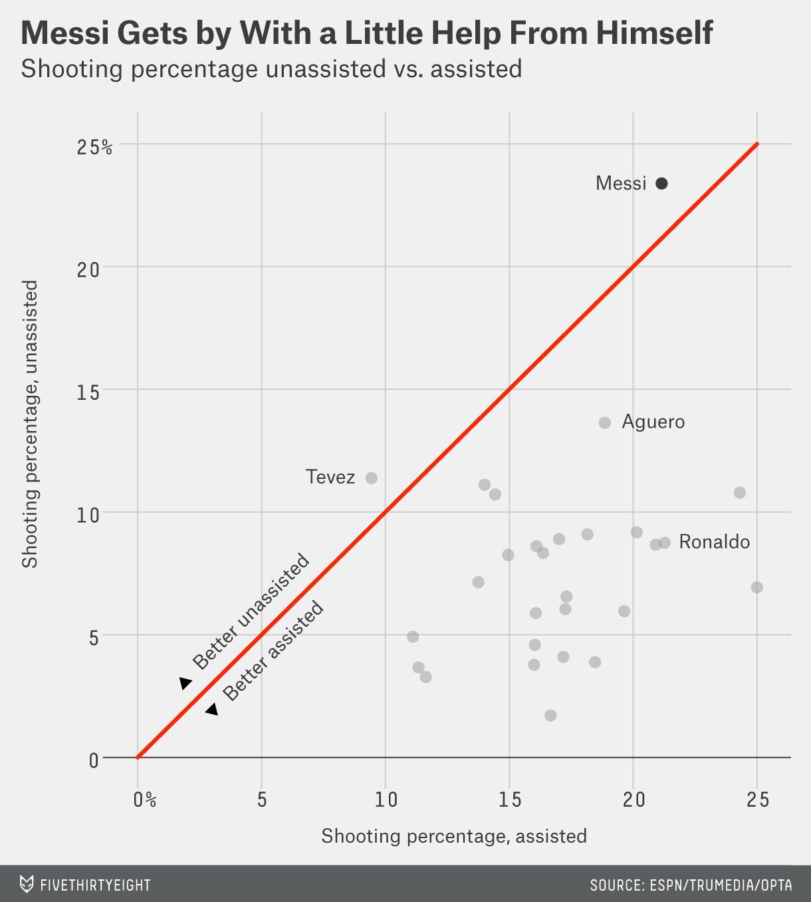
Somehow, Messi has done even better when taking it on his own than when somebody sets him up. Moreover, on unassisted shots he shoots nearly 10 percent and .044 GAA better than the next best player (Sergio Aguero for Manchester City) does, despite taking the fourth-most such shots of the 28 players in the group.
To be clear, you could probably choose any skills for your axes and produce a similar graph. Messi can shoot it just about any which way. Here are some miscellaneous shooting stats he's accrued at Barcelona:
- Messi loves his left foot, shooting with it 78 percent of the time, and scoring 23 percent. But don't sleep on his right foot: When he uses it, he scores 23 percent of the time. He shoots slightly below average on (a limited number of) headers (10 percent vs. 13 percent).
- About 8 percent of his shots are "weak" kicks (compared to 6 percent for all players in the data set), but he makes 27 percent of them, and does so more often than we'd expect. He has an average GAA of .026 on those kicks (all players: 5 percent shooting on weak kicks with -.055 GAA). Only 5 percent of his kicks are "strong" ones (compared to 8 percent for all players), but those kicks score 36 percent of the time, and have .251 GAA each! All players have scored on 11 percent of their "strong kick" shots and have an average .051 GAA per shot.
- About 12 percent of his shots have "swerve" on them (compared to 10 percent for all players); 31 percent of those swervy kicks score, for a huge .202 GAA (all players: 8 percent, .020 GAA).
- On direct free kicks (like the one he scored on against Nigeria), Messi has scored about 8 percent of the time (compared to all players' 5 percent), with .021 GAA per shot (Ronaldo has scored on 7 percent with an identical .021 GAA).7
- Messi has scored on 86 percent of his penalty kicks, versus an average of 77 percent for all players. But put one check-mark in Ronaldo's column, as he has scored on 93 percent of his penalty attempts. Since both are the primary PK-takers for both their club and national teams, this difference — if it held up in the long run — would be worth about three-quarters of a goal per year.
To make all those unassisted shots possible, Messi has to take on a lot of defenders one on one. There's a stat for that, and in my view it's one of the most revealing, reflecting both Messi's skill and style, and the relationship between the two. Of all forwards in our data set who've played 100-plus games, he "takes on" defenders the most, and he's the most successful at it.
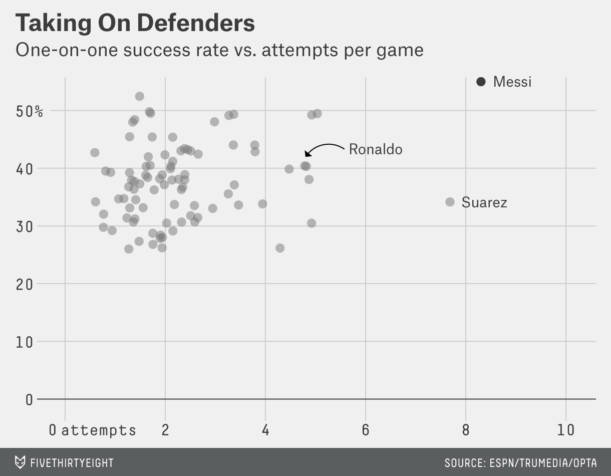
The only forward who takes on defenders nearly as aggressively as Messi is Luis Suarez, the Uruguayan striker for Liverpool who is perhaps too aggressive for his own good. Suarez is successful less than 35 percent of the time.
This may help explain how Messi gets so many better shots, and why his "unassisted" shots are so good. It also points to the main stylistic difference between Messi and Ronaldo: Ronaldo takes more mid-range shots but misses a lot of them; Messi tries to beat a lot more defenders, loses sometimes, and then makes up for it (and then some) by having better assisting and shooting opportunities as a result. That's not to say one approach is better than the other, but note that it means that the observed shooting gap between them is at least somewhat exaggerated. While Messi appears to shoot much more efficiently, that's partly because he loses the ball more during failed take-on attempts, while Ronaldo loses it more because of missed shots. Only the second of those is accounted for in shooting stats. (I'll get more into how we can account for loss of possession in the touch-by-touch analysis later.)
Passing and Assists
From the above, you might think Messi is a selfish player. Or you might assume that if Messi is so good at shooting, he'd focus on it to the exclusion of other skills. But, in true Wayne Gretzky-esque fashion, Messi is also one of the top assisters in our data set. Once again, that makes him a crazy outlier: No one else (aside from, yes, Ronaldo) even comes close to his combination of goals scored versus goals dished.
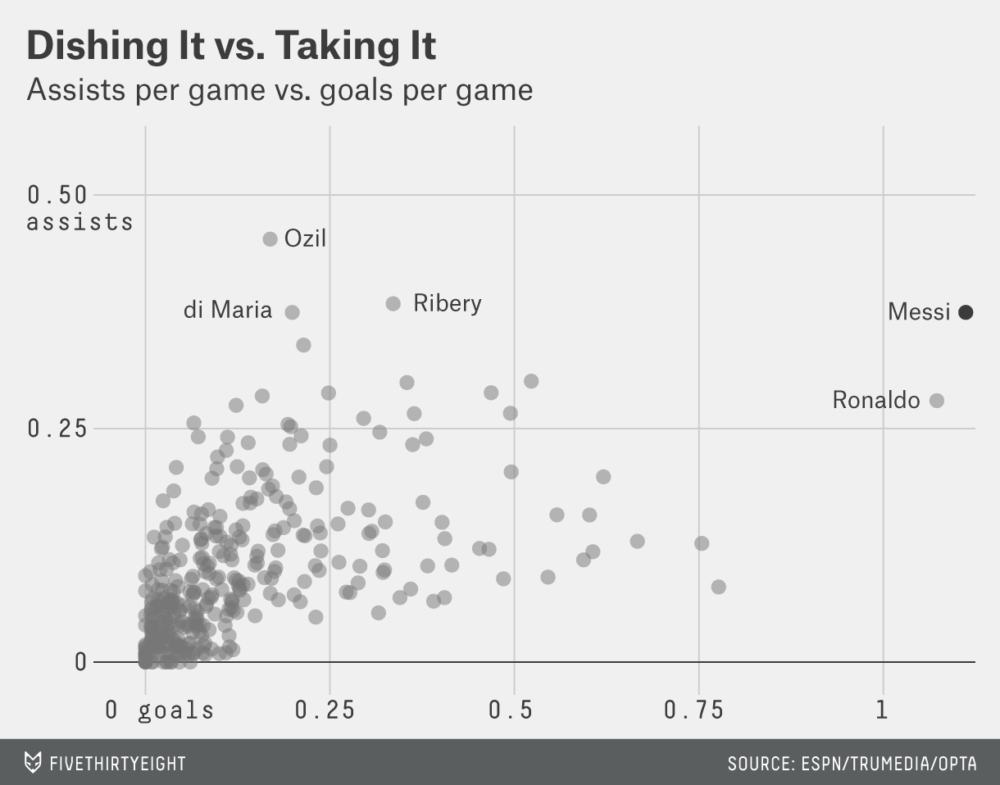
Not only is Messi the top game-by-game goal-scorer of the last four years, he's the third-most productive distributor of assists, despite being the primary scorer on his own team! Only Mesut Ozil and Franck Ribery8 earned more assists than Messi, and Ozil did it on Real Madrid9 — setting up Cristiano Ronaldo.
But how does he do it? The biggest obstacle to evaluating Messi's passing ability is accounting for the fact that he plays for the most pass-happy team in the world. Watching Barcelona can be a bit like watching a playground game of keep away. Barcelona's players are infamous for their "tiki-taka" style of play, which relies on an enormous amount of short, high percentage passing. Above all else, they try to maintain possession of the ball until a chance opens up. This sounds like a great strategy, but there's a reason it isn't employed universally: To make it work, a team has to be stocked with amazing passers, and it has to have strikers capable of creating chances against set defenses.10
Messi is both of those things. And what's more, his passing profile is nothing like the other Barcelona forwards, who typically send 72 percent of their passes back or square. Messi is far more likely to try to advance the ball toward the goal, and far more likely to succeed:
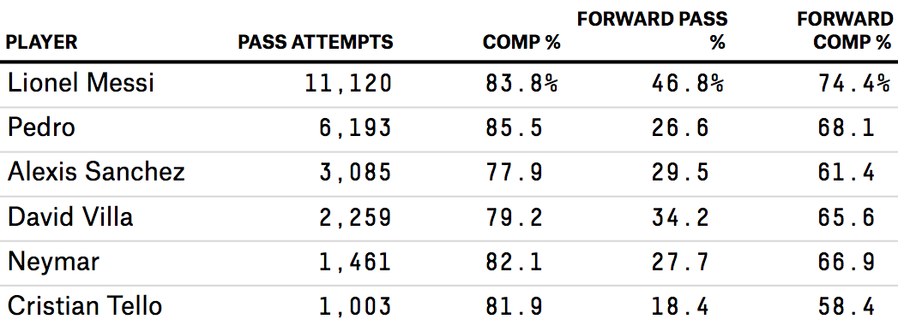
Messi makes more passes than the other forwards, with a higher percentage of those passes trying to advance the ball toward the goal, and a higher percentage of those passes finding their targets (typical Messi!). His 3,800-plus completed forward passes are nearly twice as many as any forward in our data set (Francesco Totti for FC Roma has 2,200, followed by Wayne Rooney, the English striker, with 1,800 and Ronaldo with 1,500).
One measure of the quality of a group of passes is how many are completed successfully, but it also matters what happens when those passes get where they're going. It doesn't help if a player passes 60 yards to someone swarmed with defenders. So a useful metric (made possible by play-by-play data) is the percentage of a player's passes that lead to "successful" plays on the other end — meaning the receiving player manages to get off a shot, or passes the ball to someone else, and so on.
As it turns out, not only does Messi pass the ball forward aggressively, he does so accurately, and the balls he delivers are "successful" a very high percentage of the time.
For example, let's look at Messi's long ball forward passes from the midfield area. I've created a scatter comparing each player's completion percentage for these passes to the percentage of them that are "successful," and I've shown the volume of long pass attempts for each player as bubble sizes:
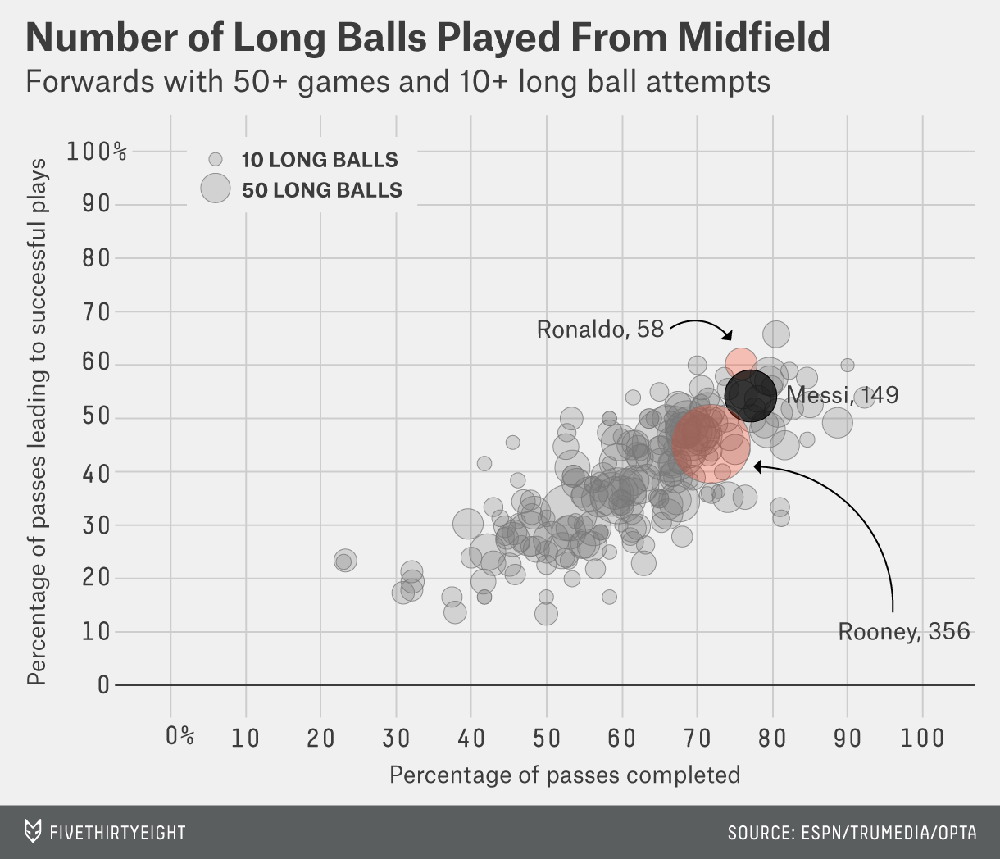
Messi is among the most accurate passers for both metrics, and no one with as many attempts is more accurate.11 There are players who complete a higher percentage of these passes and/or are more "successful" with them, but they're typically being more selective in their attempts. For example, Ronaldo's "success" rate of 60 percent beats Messi's 54 percent (with a slightly lower completion percentage), but Ronaldo has only 35 successful long ball passes to Messi's 81.
Given that, it's no surprise that Messi excels at the through-ball, the delicate and gorgeous play that requires perfect circumstances and perfect timing to be successful. Messi attempts almost twice as many of these passes as any other forward, and still manages to beat the trend.
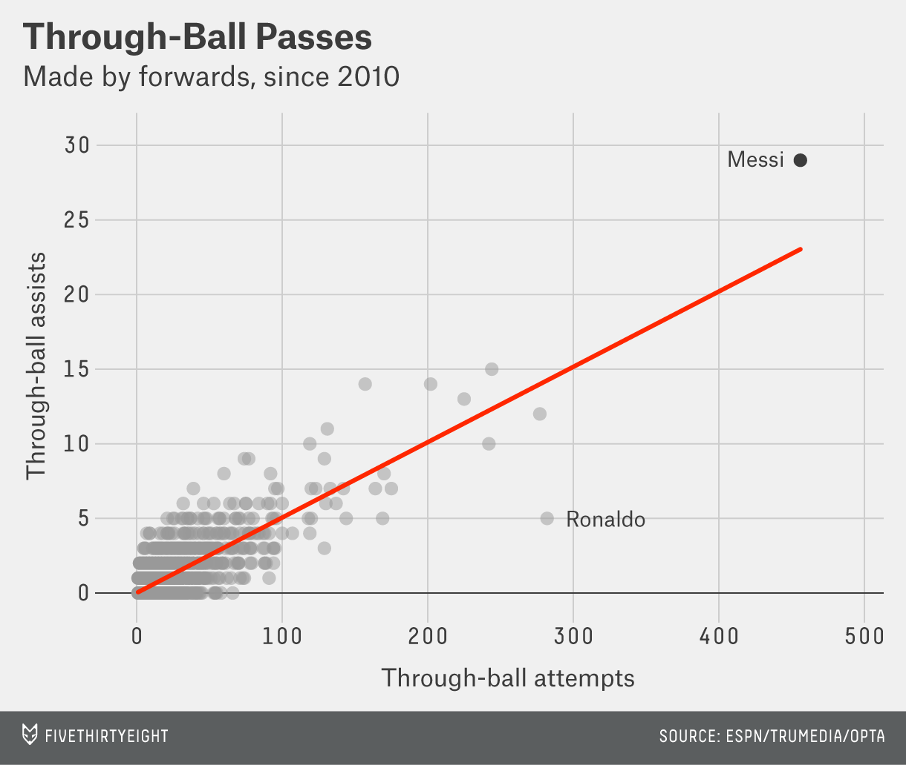
And then there's the bread and butter of aggressive passing: moving it toward the goal on the opponent's side of the field. In attacking territory, no one attacks as often as Messi does, and no one has more success doing so.
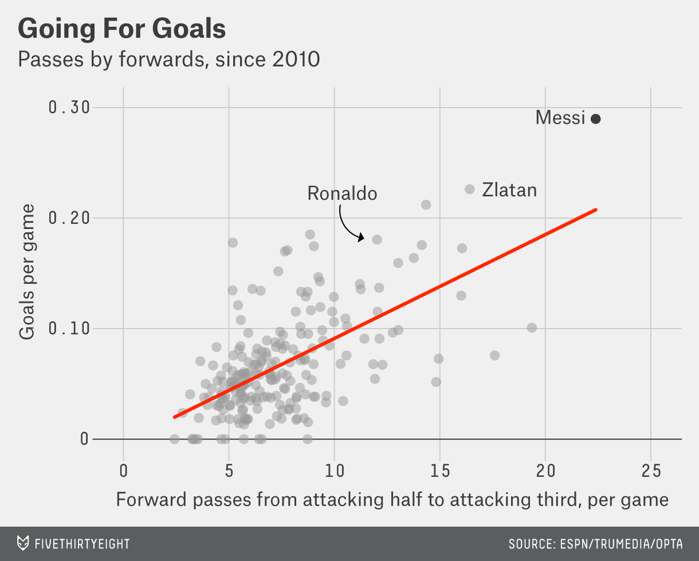
These passes are where most assists come from, and indeed, Messi has the most assists per game from these kinds of passes of any forward, by a large margin. And again, despite making twice as many attempts as most people, he beats expectations.
Touch by Touch
By this point, it should be evident that Messi has at least a little bit of skill. But there's still heavy lifting to do: We have to show that he actually makes his team better.
First, to ensure that we're celebrating the greatness of Messi and not the greatness of Barcelona, we need to make sense of Messi on Barcelona. The easiest way to do that is to evaluate Barcelona without Messi, also known as the Spanish national team.
The contrast between Spain in 2010 and Spain in 2014 seems huge: The 2010 team won the World Cup, and the 2014 team was tied for first in the tournament to be mathematically eliminated. But lost in this narrative is that the 2010 championship team wasn't all that great, at least on offense. That World Cup team scored fewer goals per game than this year's: only eight goals in seven games in 2010, while this year's group-stage dropouts scored four goals in three. (That's 1.2 goals per game overall.) For comparison, in the 2010-11 UEFA Champions League (the highest level of competition for European club soccer), Barcelona scored 30 goals in 13 games. In 47 UEFA matches since 2010, Barcelona has scored 104 goals, or 1.08 goals per game more than a Spanish team comprised of a similar offensive core and using the same "tiki-taka" playing style, minus Lionel Messi.
Perhaps that's an unfair comparison to make — but it's consistent with the theory that Barcelona's "play keep away until lightning strikes" offense really only works when it has Messi as its striker.
Between Messi's shots taken and chances created, he is responsible for about 48 percent of Barcelona's regular (non-penalty, non-set play) shot attempts. Yet he and the players he assists score about 60 percent of Barca's goals.
In fact, the more involved Messi is in a shot attempt, the more likely his team is to score. He has scored on 22.1 percent of his regular (non-set, non-penalty, non-shootout) shots for Barca himself. The people to whom he's dished assists and chances have scored on 18.1 percent of their shots. Meanwhile, Barcelona shots that didn't come from Messi's foot12 or Messi's passing scored just 12.5 percent of the time.
Even though Barcelona is one of the best teams in the world, there's a huge difference between when Messi is involved in creating shots and chances and when he isn't. Here are the equivalent differences for all players since 2010 with more than 100 games played and four or more shots or assist chances per game:
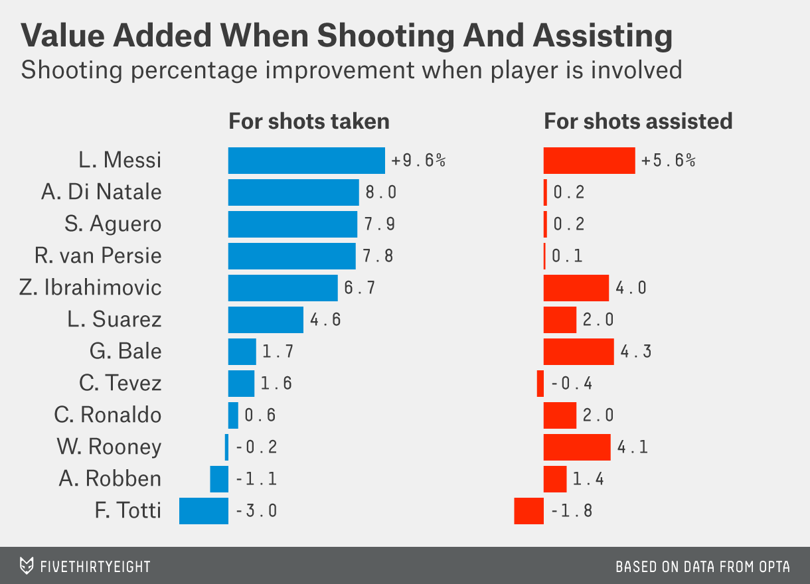
Of course, these are raw shooting percentages and don't account for the types of shots each player is taking or assisting, or the number of attempts. It's generally harder to stay valuable over a larger number of shots, and we haven't yet factored in that difficulty.
For that, we turn back to the goals above average model, which compares each shot or chance outcome with its expectation. From this, we can tell whether a player has exceeded expectations for all of his shot attempts and chances created. Then we can do the same for all shots taken by his team without the player's involvement, and compare the two. For example, if the player scored .02 goals above expectation per shot attempt, and the rest of his team scored -.01 goals less than expectation, that player's value-added would be +.03 goals per shot (the value above replacement for that player on that team). Now let's plot that added value against each player's13 total offensive participation (the percentage of team shots he's involved with):
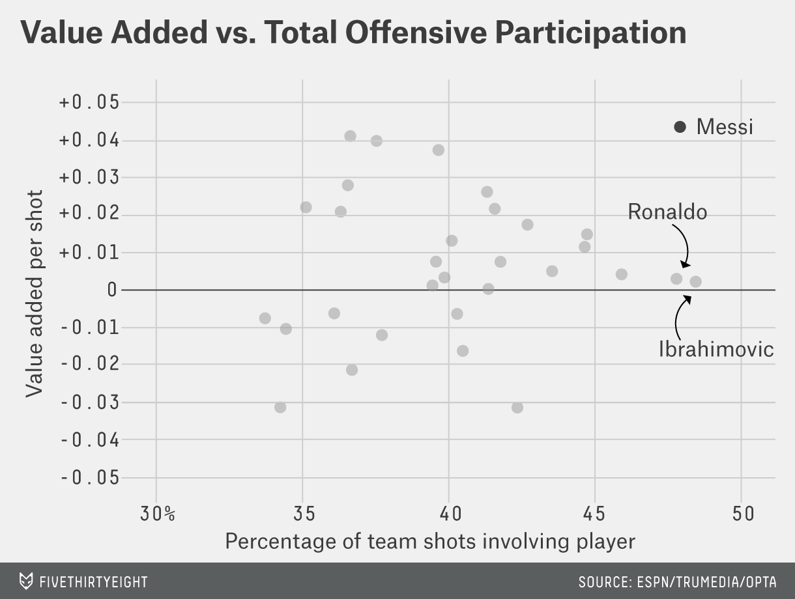
Finally, after however many charts, we see a diminishing return. At least for everyone not named Lionel Messi. He once again tops the field, impervious to the burden.
But that's just what happens once the shots are lined up. If we want to explore a player's efficiency, we have to look into his touches more deeply. For this purpose, I created a stat called "possessions used." It's a little bit analogous to usage rate in basketball, and incorporates the number of touches in which a player:
- Takes a shot;
- Passes the ball to a player who takes a shot;
- Turns the ball over;
- Tries to pass the ball and fails;
- Tries to take on a defender and fails.
In other words, it's a stat meant to reflect anything that ends a team's possession, whether that outcome is positive or negative. Events that simply prolong the possession (taking on a defender and succeeding, or passing the ball to another teammate who does not take a shot) aren't factored in.
Obviously passing the ball is an important skill (which I covered a bit above), but for this metric I just want to know about the relative likelihood of good outcomes (goals, assists) to bad ones (misses, turnovers, etc.) when the player does something possession-ending.14 Looking at players who "use" more than 15 possessions per game, we can plot possessions used against scoring and assists like so:
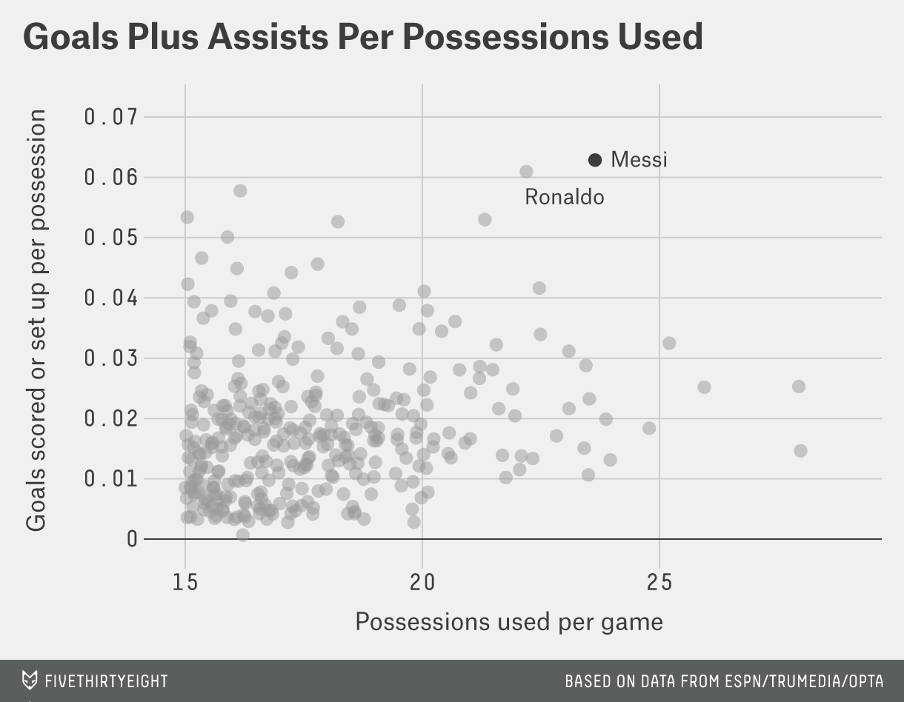
Cutting out all the passing that doesn't end in a shot, Messi generates the most points per touch of any player with a similar usage rate. But there are a couple of other important things to notice in this graph: Despite not taking as many shots, Messi uses more possessions per game than Ronaldo does. This is generally because Messi is much more likely to take on defenders, and thus is much more likely to lose possession of the ball or turn it over entirely. (He is also relatively more likely to set up a potential assist.)
Importantly, turnovers in soccer aren't as big of a deal as they are in basketball or American football. Shots, even bad ones, are more of a limited resource in soccer than possessions. Risking a turnover to increase your chances of scoring a goal even by a small amount can be worth it.
Finally, Messi's defense is consistent with that of a high-volume striker.15 That he's practically munchkin-sized (he's only 1.69 met — ahem, excuse me — 5′ 7″ tall) seems not to matter.
To look at Messi's defensive skill, I combined successful tackles,16 interceptions and blocked shots, then adjusted for number of opponent possessions (as I did with offense above).
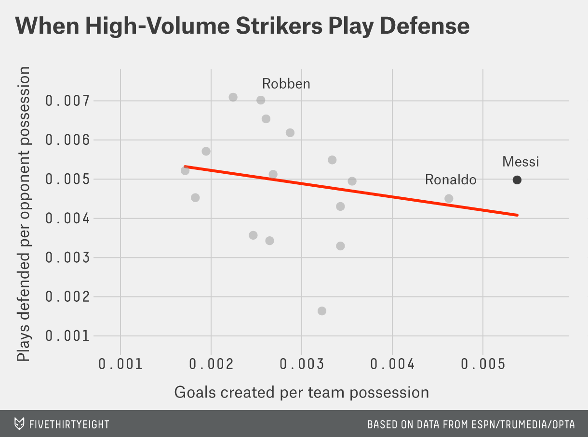
There are a few lines where Messi's stats are considerably worse than his peers' (meaning Ronaldo's): He doesn't get a lot of clearances — although this is partly style, as Messi is more willing to pass out of defensive territory (or even take on defenders). And he doesn't go for (or succeed at) a lot of aerials (50-50 balls in the air). While I haven't studied this aspect of his game in depth, soccer experts in the FiveThirtyEight office theorize that it has something to do with his stature.
Conclusion
How should Argentina fans feel about all this, given the disappointment they've experienced in World Cups past and the hopes they've pinned on Messi this year? So far in the 2014 tournament, Messi has been erasing whatever gap there was between his Barcelona stats and his Argentina stats, with style. And that gap was never really as big as it appeared.
Since the 2010 World Cup, Messi has scored 19 goals and six assists for Argentina in 22 games (.9 goals per game and .3 assists per game, compared to 1.1 and .4 for Barca). For shooting/assisting efficiency, he has scored .199 GAA per game for Argentina versus .262 for Barca. He also has better defensive stats for Argentina, so even if there are persistent differences, it's quite possible it has to do with style and Messi's role on each team rather than the quality of his play.
And 22 games is a tiny sample. Even so, these stats are perfectly consistent with the argument that Messi is the best footballer on earth: That .199 GAA is better than the .175 GAA per game that Ronaldo has earned at Real Madrid since 2010. This is what that .199 GAA looks like:
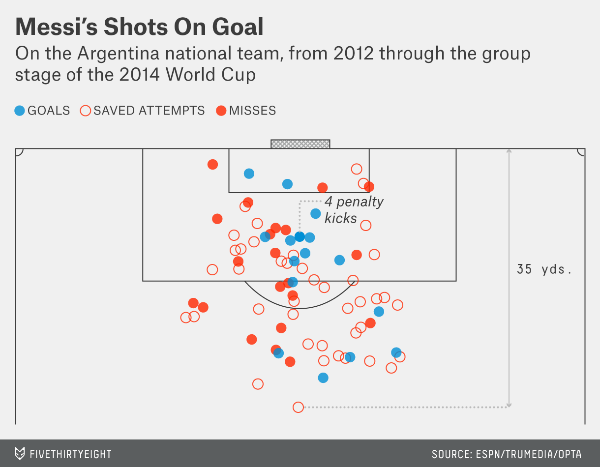
In other words, if Barca-Messi and Argentina-Messi were two different people, even based solely on the stats recorded since 2010, there's a good chance they'd be the two best players in the world.
One of them is playing on Tuesday.
Correction (July 1, 12:32 p.m.): The axes in an earlier version of the chart on through-balls above misstated what they measured. The chart shows attempted through-balls and through-ball assists, not attempted and successful assists.
Correction (July 1, 1:06 p.m.): This article originally misstated that Cristiano Ronaldo had 289 goals since the 2010 World Cup. He had 230 goals, and 59 assists in that time, for 289 combined goals and assists.
Correction (July 7, 7:29 a.m.): An earlier version of this article also incorrectly said that Ronaldo had 41 successful long ball passes when in fact he had 35.
Footnotes
- Imagine how good Peyton Manning would be if whomever he played for could spend three times as much as 90 percent of NFL teams. ↩
- The crux of my research is based on play-by-play data (plus x-y coordinates) from ESPN's partnership with the sports data companies Opta and TruMedia. ↩
- Unless he is LeBron James. ↩
- For this plot, I've excluded penalty shots, shootout shots and direct free kicks. I'll discuss those separately. ↩
- I should note that the data on this has a little gray area. The play-by-play data lists "assisters" on several plays that are nonetheless designated as "individual plays" and for which no one was awarded an assist. I treated all such shots as unassisted, even if another player's assistance was noted. ↩
- Since assist-related stats tend to be dependent on a team's offensive system, for this chart I've grouped shots by team, so it only includes Messi's shots for Barcelona and Ronaldo's for Real Madrid. ↩
- I've excluded other set-piece attempts because they're very dependent on each player's role on his team. Ronaldo has taken five times as many shots in those situations, but Messi has been slightly more efficient. ↩
- Frank Ribery is a terrific winger/midfielder who can sometimes put the ball in the net, but he's the fourth-leading scorer on powerhouse Bayern Munich's Bundesliga-winning squad. ↩
- Messi and his Argentina teammate Angel di Maria (also of Real Madrid) are tied to four decimal places, but Messi just edges him in the fifth. ↩
- Whether "possession football" — much less the extreme form employed by Barca — is even a good strategy at all is controversial. In a seminal 1968 study, Charles Reep noted that 80 percent of goals came from possessions involving three or fewer passes, and that successfully completing a lot of passes without losing the ball was very difficult. He thought this proved that possession football was inefficient, but many have disagreed with his logic, and subsequent studies have shown mixed results. ↩
- Yes, that giant bubble in the middle is Wayne Rooney. ↩
- Or other non-arm body part. But he mostly uses his feet. ↩
- Among players who played 100 games with two or more shots per game and one or more chance created per game. ↩
- This also somewhat neutralizes any statistical advantage for players who play for pass-happy teams like Barcelona. ↩
- Which is to say, players who've logged 100-plus games, taken an average of three or more shots per game, and who've made at least 50 percent of their touches in the attacking third. ↩
- I didn't count missed tackles as either positive or negative, because they aren't nearly as bad as a successful tackle is good. ↩